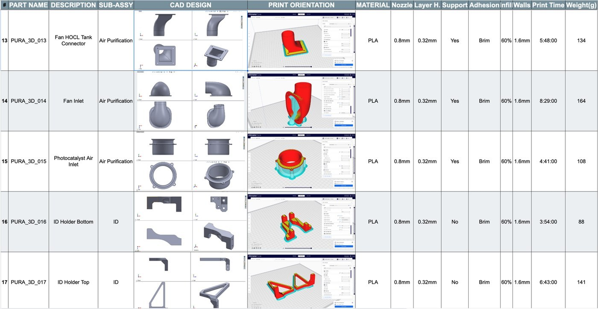

← Alle Projekte

Teilemanagement additive Fertigung
Arche Robotics | 2020 – 2023 | Konstruktionsingenieur
Einheitliche Druckqualität

Was?
- Aufbau eines Excel-basierten Tracking-Systems zur Dokumentation 3D-gedruckter Teile und für einen geordneten Bestand.
Ergebnisse
- Einheitliche Bauteilqualität durch identische Slicing-Einstellungen.
- Effiziente Nachverfolgung von Serienfertigung, Druckzeit und Materialverbrauch.